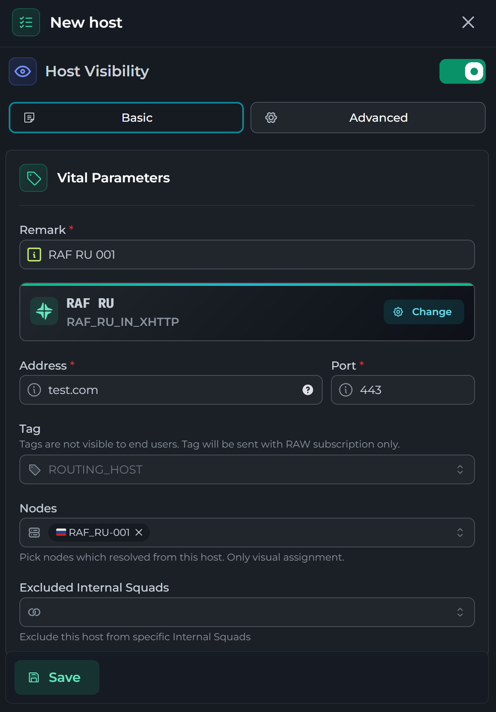
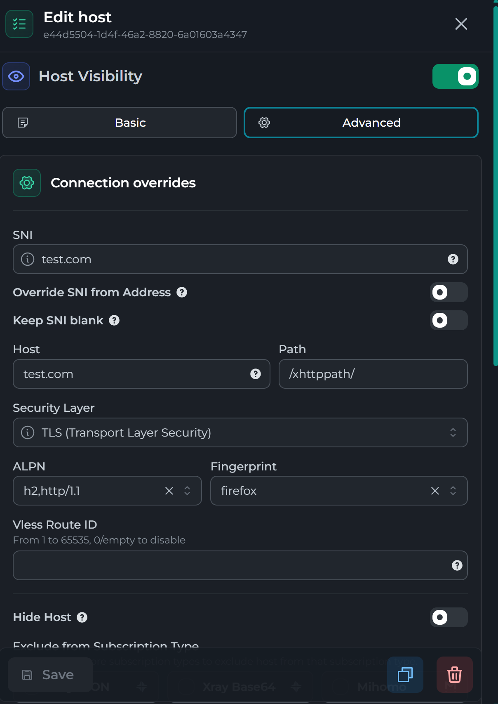

CDN XHHTP¶
Я использую продукт как Remnamave и статья будет расписанна для него
Подключаемся к ноде¶
Подключаемся по ssh и переходим в папку /opt/remnanode и открываем файл nginx.comf. Путь к данному файлу может отличаться.
В северный блок кода добавляем следующий код:
location /xhttppath/ {
client_max_body_size 0;
proxy_set_header X-Real-IP $proxy_protocol_addr;
proxy_set_header X-Forwarded-For $proxy_protocol_addr;
proxy_set_header Host $host;
proxy_set_header Upgrade $http_upgrade;
proxy_set_header Connection $connection_upgrade;
proxy_http_version 1.1;
client_body_timeout 5m;
proxy_read_timeout 315s;
proxy_send_timeout 5m;
proxy_pass http://unix:/dev/shm/xrxh.socket;
}
Пример отредактированного файла nginx.conf¶
server_names_hash_bucket_size 64;
map $http_upgrade $connection_upgrade {
default upgrade;
"" close;
}
ssl_protocols TLSv1.2 TLSv1.3;
ssl_ecdh_curve X25519:prime256v1:secp384r1;
ssl_ciphers ECDHE-ECDSA-AES128-GCM-SHA256:ECDHE-RSA-AES128-GCM-SHA256:ECDHE-ECDSA-AES256-GCM-SHA384:ECDHE-RSA-AES256-GCM-SHA384:ECDHE-ECDSA-CHACHA20-POLY1305:ECDHE-RSA-CHACHA20-POLY1305:DHE-RSA-AES128-GCM-SHA256:DHE-RSA-AES256-GCM-SHA384:DHE-RSA-CHACHA20-POLY1305;
ssl_prefer_server_ciphers on;
ssl_session_timeout 1d;
ssl_session_cache shared:MozSSL:10m;
ssl_session_tickets off;
server {
server_name halo.uovio.cc;
listen unix:/dev/shm/nginx.sock ssl proxy_protocol;
http2 on;
ssl_certificate "/etc/nginx/ssl/raf.com/fullchain.pem";
ssl_certificate_key "/etc/nginx/ssl/raf.com/privkey.pem";
ssl_trusted_certificate "/etc/nginx/ssl/raf.com/fullchain.pem";
root /var/www/html;
index index.html;
add_header X-Robots-Tag "noindex, nofollow, noarchive, nosnippet, noimageindex" always;
}
server {
listen unix:/dev/shm/nginx.sock ssl proxy_protocol default_server;
server_name _;
add_header X-Robots-Tag "noindex, nofollow, noarchive, nosnippet, noimageindex" always;
ssl_reject_handshake on;
return 444;
}
server_names_hash_bucket_size 64;
map $http_upgrade $connection_upgrade {
default upgrade;
"" close;
}
ssl_protocols TLSv1.2 TLSv1.3;
ssl_ecdh_curve X25519:prime256v1:secp384r1;
ssl_ciphers ECDHE-ECDSA-AES128-GCM-SHA256:ECDHE-RSA-AES128-GCM-SHA256:ECDHE-ECDSA-AES256-GCM-SHA384:ECDHE-RSA-AES256-GCM-SHA384:ECDHE-ECDSA-CHACHA20-POLY1305:ECDHE-RSA-CHACHA20-POLY1305:DHE-RSA-AES128-GCM-SHA256:DHE-RSA-AES256-GCM-SHA384:DHE-RSA-CHACHA20-POLY1305;
ssl_prefer_server_ciphers on;
ssl_session_timeout 1d;
ssl_session_cache shared:MozSSL:10m;
ssl_session_tickets off;
server {
server_name halo.uovio.cc;
listen unix:/dev/shm/nginx.sock ssl proxy_protocol;
http2 on;
ssl_certificate "/etc/nginx/ssl/raf.com/fullchain.pem";
ssl_certificate_key "/etc/nginx/ssl/raf.com/privkey.pem";
ssl_trusted_certificate "/etc/nginx/ssl/raf.com/fullchain.pem";
root /var/www/html;
index index.html;
add_header X-Robots-Tag "noindex, nofollow, noarchive, nosnippet, noimageindex" always;
location /xhttppath/ {
client_max_body_size 0;
proxy_set_header X-Real-IP $proxy_protocol_addr;
proxy_set_header X-Forwarded-For $proxy_protocol_addr;
proxy_set_header Host $host;
proxy_set_header Upgrade $http_upgrade;
proxy_set_header Connection $connection_upgrade;
proxy_http_version 1.1;
client_body_timeout 5m;
proxy_read_timeout 315s;
proxy_send_timeout 5m;
proxy_pass http://unix:/dev/shm/xrxh.socket;
}
}
server {
listen unix:/dev/shm/nginx.sock ssl proxy_protocol default_server;
server_name _;
add_header X-Robots-Tag "noindex, nofollow, noarchive, nosnippet, noimageindex" always;
ssl_reject_handshake on;
return 444;
}
Сохраняем файл:
Закрываем файл:
Настраиваем конфигурацию XHHTP в inbound в настройках config profiles¶
{
"tag": "Sweden_XHTTP",
"listen": "/dev/shm/xrxh.socket,0666",
"protocol": "vless",
"settings": {
"clients": [],
"fallbacks": [],
"decryption": "none"
},
"sniffing": {
"enabled": true,
"destOverride": [
"http",
"tls",
"quic"
]
},
"streamSettings": {
"network": "xhttp",
"xhttpSettings": {
"mode": "auto",
"path": "/xhttppath/",
"extra": {
"noSSEHeader": true,
"xPaddingBytes": "100-1000",
"scMaxBufferedPosts": 30,
"scMaxEachPostBytes": 1000000,
"scStreamUpServerSecs": "20-80"
}
}
}
}


Xray Json & Raw¶
В данном меню переходим в xHTTP, и добавляем выделенный код
{
"xmux": {
"cMaxReuseTimes": 0,
"maxConcurrency": "16-32",
"maxConnections": 0,
"hKeepAlivePeriod": 0,
"hMaxRequestTimes": "600-900",
"hMaxReusableSecs": "1800-3000"
},
"noGRPCHeader": false,
"xPaddingBytes": "100-1000",
"downloadSettings": {
"port": 443,
"address": "another.domain",
"network": "xhttp",
"security": "tls",
"tlsSettings": {
"alpn": [
"h2,http/1.1"
],
"show": false,
"serverName": "another.domain",
"fingerprint": "chrome",
"allowInsecure": false
},
"xhttpSettings": {
"path": "/xhttppath/"
}
},
"scMaxEachPostBytes": 1000000,
"scMinPostsIntervalMs": 30,
"scStreamUpServerSecs": "20-80"
}